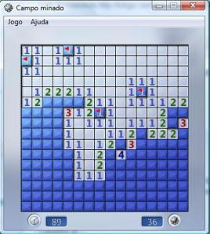
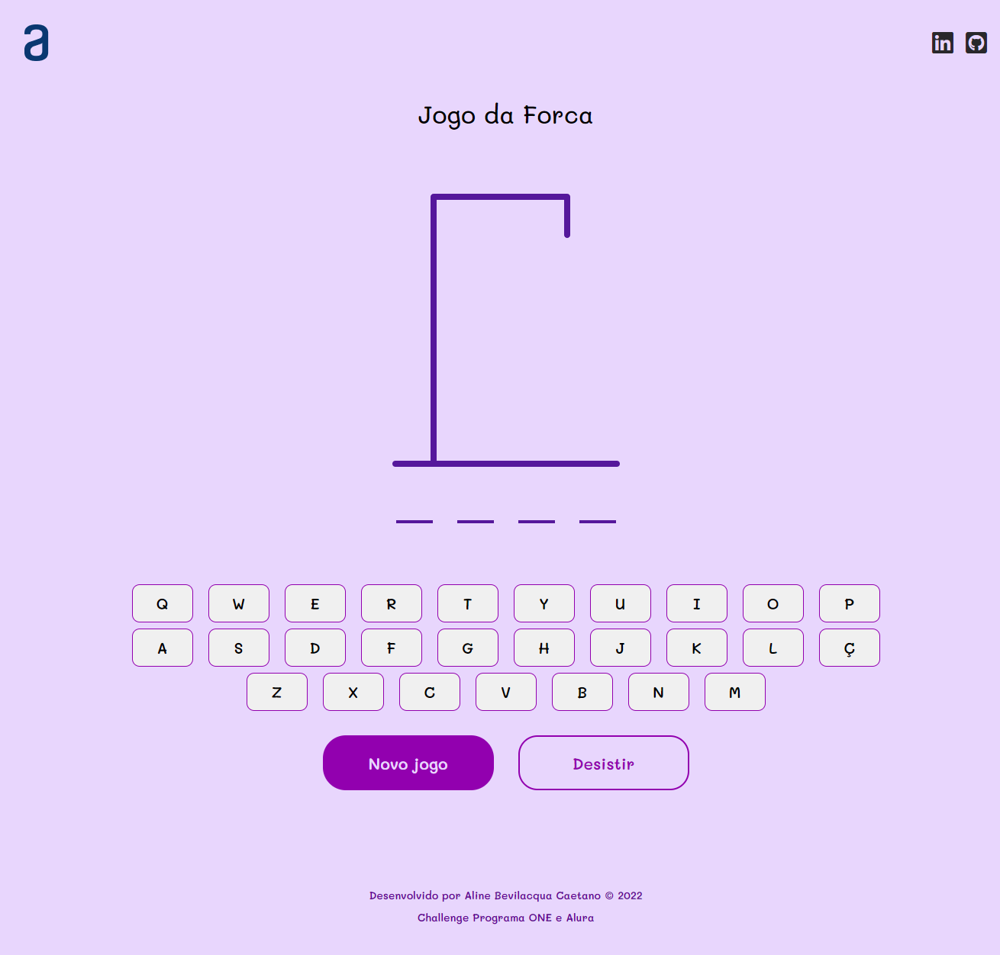
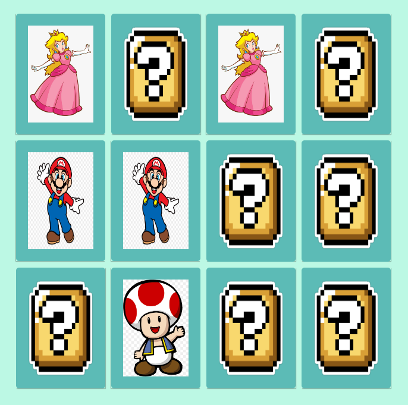
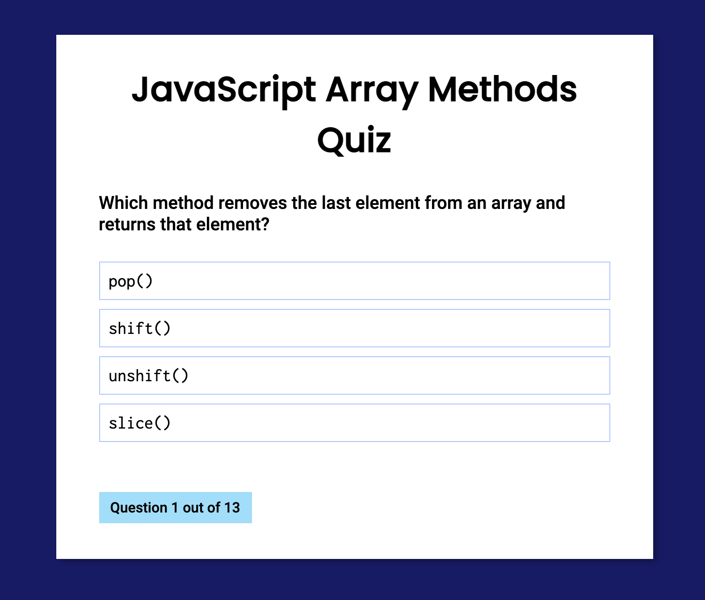
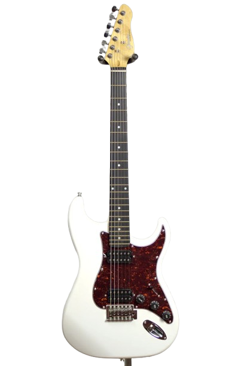
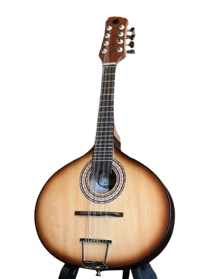
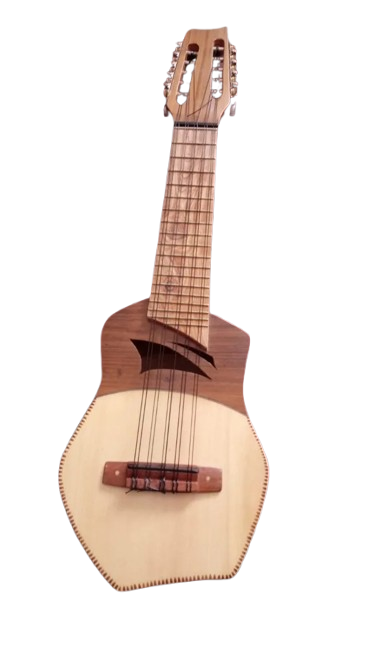
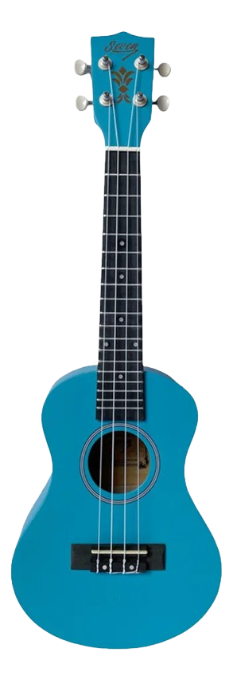
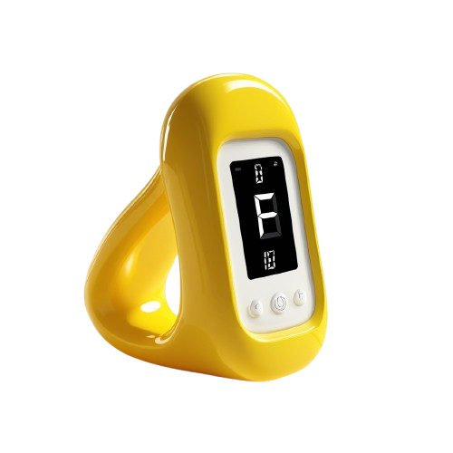

JOGOS EM DESTAQUE




INSTRUMENTOS EM DESTAQUE

Guitarra Giannini G102 Elétrica Stratocaster
R$757,00

Violoncelo Vogga 4/4
R$2.308,90

Bandolim Marquês Bnd-100 Nb Acústico
R$975,00

Viola De Arco Rolim Milor
R$2.687,90

Banjo Americano Wb50 - Strinberg
R$1.756,87

Violino Tarttan Série 100 Preto Brilho 4/4
R$697,00

Charango Madeira Maciça
R$3.480,00

Ukulele Azul Claro Seven Concert Suk-23 Lb
R$174,87

Ferramenta exclusiva da MusicWave
Afinador On-line
Descubra a harmonia perfeita com o afinador online exclusivo da MusicWave! Ele é a ferramenta ideal para garantir que cada instrumento do nosso catálogo — seja um violão, ukulele, baixo ou cavaquinho — soe impecável. Afine seu instrumento de forma rápida e precisa, e mergulhe na música sem preocupações.
Afine seu instrumento agora →